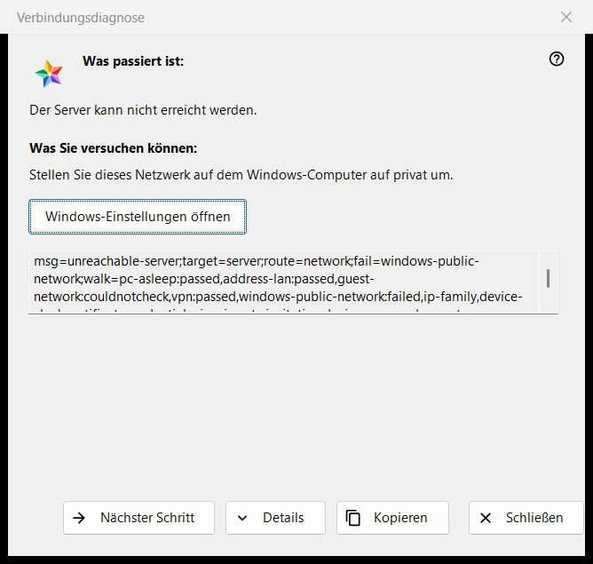
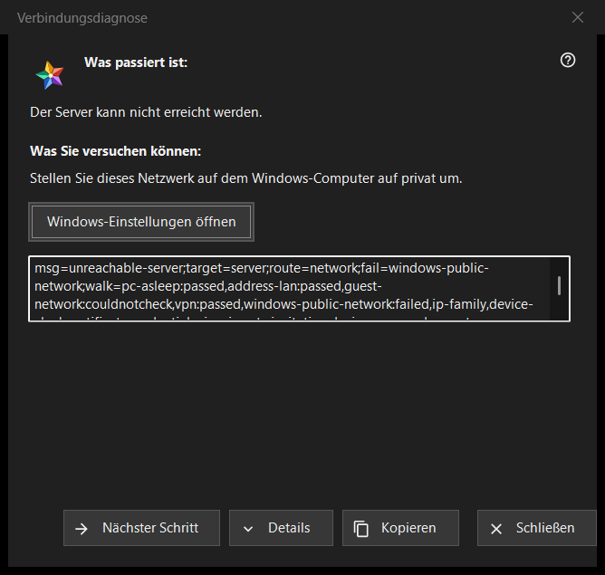

Verbindungsdiagnose
Verwendungszweck
Erklärt, warum ein Server oder ein Gerät nicht erreichbar ist, und bietet Schritt für Schritt an, was sich versuchen lässt. Es ändert keine Einstellung des Computers oder von Windows. Das Fenster öffnet sich über «Warum verbindet es nicht?..» im Menü «Mehr» der Ressourcenliste (für eine ausgewählte Zeile), von einem Servereintrag in «Meine Geräte» aus, der sich erneut anmeldet, ein geändertes Zertifikat zeigt oder nicht verbinden kann, und von selbst, wenn das Öffnen einer Ressource fehlschlägt.


In dieser Reihenfolge
- Lesen Sie «Was passiert ist:».
- Versuchen Sie, was unter «Was Sie versuchen können:» steht.
- Ist das nicht die Ursache, drücken Sie «Nächster Schritt».
- Drücken Sie «Details», wenn jemand nach den Codes fragt, und «Kopieren», um sie weiterzugeben.
- Schließen Sie das Fenster.
Die Elemente
Was passiert ist
Ein Satz über den Fehlschlag, zum Beispiel «Der Server kann nicht erreicht werden.», «Der Benutzername oder das Passwort ist falsch.» oder «Dieser Server entspricht nicht dem zuvor verbundenen.». Er richtet sich nach der Art des Fehlschlags, der das Fenster geöffnet hat.
Was Sie versuchen können
Das Fenster beginnt beim ersten Schritt, der in der Prüfung fehlgeschlagen ist, oder beim ersten Schritt, wenn keiner fehlschlug. Typische Schritte: das Gerät aufwecken, auf dem der Server läuft, prüfen, ob beide Geräte im selben Netzwerk sind, ein Gast-WLAN verlassen, ein VPN kurz ausschalten, das Windows-Netzwerk auf privat stellen, den Server aus einem anderen Netzwerk prüfen, Datum und Uhrzeit richtig einstellen, einen neuen Fingerabdruck bestätigen, Login und Passwort neu eingeben. Der letzte Schritt sagt, dass es nur der Betreiber des Servers beheben kann.
Nächster Schritt und Windows-Einstellungen
«Nächster Schritt» geht die Schritte entlang und verschwindet beim letzten. Für die zwei Schritte, die Windows-Einstellungen beheben können, das Netzwerkprofil und die Uhr, öffnet eine Schaltfläche «Windows-Einstellungen öffnen» die passende Windows-Seite; das Programm ändert selbst nichts.
Details und Kopieren
«Details» zeigt oder verbirgt ein schreibgeschütztes Feld mit den Diagnosecodes: Art des Fehlschlags, Ziel, Route, fehlgeschlagener Schritt und durchlaufene Schritte. Es enthält nie eine Adresse, ein Login, ein Passwort oder einen Fingerabdruck. «Kopieren» legt diese Zeile in die Zwischenablage, und das Fenster meldet «Diagnosecodes in die Zwischenablage kopiert.»
Wie die Prüfung arbeitet
Die Prüfung läuft nur für die Verbindung, die Sie versucht haben, und liest nur: Sie versucht, Host und Port zu erreichen, und betrachtet den Netzwerkzustand, VPN-Adapter, das Windows-Netzwerkprofil, die Adressfamilie, die Uhr und das Zertifikat. Sie hält beim ersten fehlgeschlagenen Schritt an, und eine Prüfung, die nicht durchgeführt werden konnte, zählt nie als bestanden oder als fehlgeschlagen.